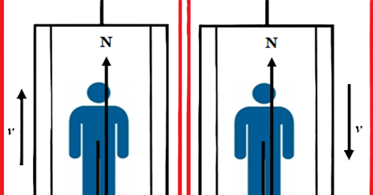
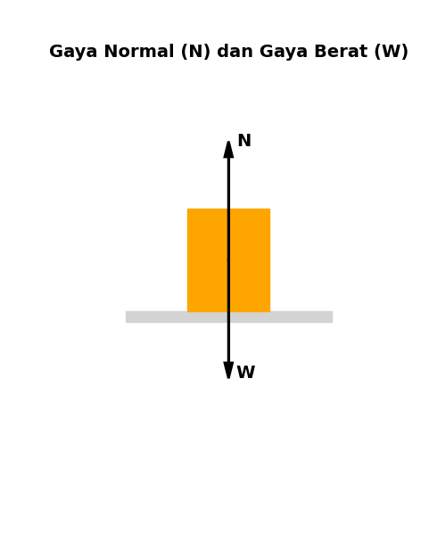
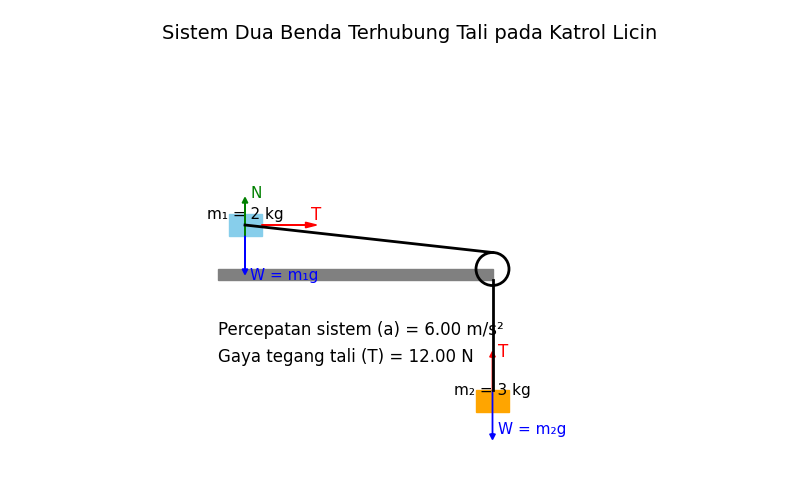

Ketika kalian naik lift apakah kalian merasa ada sesuatu yang mendorong kita naik keatas. Itu yang biasa disebut sebagai Gaya. Gaya didefinisikan sebagai tarikan atau dorongan yang memiliki arah. Pada kasus lift gaya yang seakan mendorong ke atas adalah interaksi pada sistem lift itu sendiri akibat bumi dan tegangan tali. Kita tinjau gambar dibawah ini

Sistem Pertama
Bayangan kamu sedang berdiri di lift diam tanpa bergerak maka gaya yang bekerja pada lift dapat ditunjukkan pada gambar berikut:

Sebab kalian diam maka hanya akan ada 2 gaya yang bekerja pada sistem yaitu gaya Normal dan gaya Berat. Gaya ini sama besar namun arahnya berbeda. Hal ini muncul sebab hukum pertama newton yang menyebabkan
\[N = W = m \cdot g\]
Jadi gaya normal dan gaya berat memiliki nilai yang sama.
Sistem kedua
Sekarang kamu memencet tombol menuju lantai selanjutnya. Jadi kalian mengalami perpindahan yang kita ambil nilainya positif sebab menuju keatas. Sebab kalian mengalami perpindahan, maka kalian juga akan mengalami percepatan. Sehingga hukum kedua Newton dalam lift akan berlaku
\[
\sum F = m \cdot a
\]
Sebab hanya ada 2 gaya yang berlaku yaitu gaya bera
\[N - W = m \cdot a\]
Sekarang kita tinjau bila sistem yang ada di lift membuat kecepatan kalian konstan. Karena kecepatan kalian konstan, maka percepatan juga konstan a=0 maka hanya akan ada gaya gravitasi yang menarik kalian ke pusat massa
\[
N - W = 0
\]
\[
N = m
\]
\[N = m \cdot g\]
Sekarang kita sudah memiliki 2 keadaan yaitu aturan hukum newton dalam lift dan resultan gaya yang dihasilkan di dalam lift. Sekarang bagaimana ketika kecepatan tidak sama dengan 0? Maka resultan gaya yang dihasilkan
\[N - W = m \cdot a\]
\[N = W + m \cdot a\]
\[
N = m \cdot g + m \cdot a
\]
\[
N = m (g + a)
\]
Nah hubungan ini yang dapat menjawab kenapa ketika kita naik lift padahal massa dan gaya gravitasi kita sama tetapi seperti ada gaya dorongan mengarah keatas.
Sekarang kita tinjau ketika turun. Ketika kita turun maka resultan yang dihasilkan akan bernilai negatif maka
\[N - W = -m \cdot a\]
\[
N = w + (-ma)
\]
\[
N = mg (-ma)
\]
\[
N = m (g - a)
\]
Nah hubungan ini menjelaskan kenapa ketika lift turun ke bawah badan kita terasa terdorong ke arah bawah.
Latihan Soal
Dua benda bermassa \( m_1 \) dan \( m_2 \) masing-masing memiliki massa 2 kg dan 3 kg dihubungkan dengan seutas tali ringan dan licin melalui katrol licin.
Benda \( m_1 \) berada di atas meja dan benda \( m_2 \) menggantung di sisi meja.
Hitung besar gaya tegang tali (T) yang dihasilkan serta percepatan sistem (a) jika ditinjau percepatan gravitasi \( g = 10 \, \text{m/s}^2 \).
Pilihan jawaban:
A. \( T = 8 \, \text{N}, \, a = 4 \, \text{m/s}^2 \)
B. \( T = 12 \, \text{N}, \, a = 6 \, \text{m/s}^2 \)
C. \( T = 16 \, \text{N}, \, a = 8 \, \text{m/s}^2 \)
D. \( T = 10 \, \text{N}, \, a = 10 \, \text{m/s}^2 \)
Seorang siswa dengan massa 60 kg berdiri di dalam lift yang bergerak naik dengan percepatan \( a = 2 \, \text{m/s}^2 \).
Hitung besar gaya normal yang dirasakan oleh siswa (anggap \( g = 10 \, \text{m/s}^2 \)).
Pilihan jawaban:
A. 480 N
B. 600 N
C. 720 N
D. 840 N
🔑 Kunci Jawaban
Nomor 1
Pembahasan:

Dari gambar ini terdapat 2 sistem, yaitu sistem horizontal dan sistem vertikal.
Kita tinjau sistem horizontal
Maka resultan gaya tegang tali kedu sistem ini adalah:
\[
m_2 g - m_1 a = m_2 a
\]
\[
m_2 g = m_1 a + m_2 a
\]
\[
m_2 g = a (m_1 + m_2)
\]
\[
a = \frac{m_2 g}{m_1 + m_2} = \frac{3 \times 10}{2 + 3} = \frac{30}{5} = 6 \, \text{m/s}^2
\]
\[
T = m_1 a = 2 \times 6 = 12 \, \text{N}
\]
Jadi: \( T = 12 \, \text{N} \) dan \( a = 6 \, \text{m/s}^2 \) ✅
Jawaban benar: B
Nomor 2
Sebab siswa tersebut bergerak naik, maka akan mengalami percepatan yang resultannya positif, maka:
Diketahui:
\( m = 60 \, \text{kg} \)
\( a = 2 \, \text{m/s}^2 \)
\( g = 10 \, \text{m/s}^2 \)
Ditanya:
\( N \, ? \)
Penyelesaian:
\[
N = m(g + a)
\]
\[
N = 60(10 + 2) = 720 \, \text{N}
\]
Jika lift diam, gaya normal yang dirasakan adalah:
\[
N = m \cdot g = 60 \times 10 = 600 \, \text{N}
\]
Jadi: gaya normal yang dirasakan saat lift bergerak naik adalah \( N = 720 \, \text{N} \) ✅
Jawaban benar: C
Latihan Soal Isian
Seorang teknisi sedang memperbaiki sistem pengangkat barang di sebuah gedung.
Di dalam lift terdapat sebuah peti bermassa 40 kg yang diikat dengan tali ke atap lift.
Kemudian ketika sistem diuji, motor penggerak menggerakkan lift ke atas dengan percepatan 3 m/s².
Beberapa saat kemudian sistem mengalami gangguan sehingga lift bergerak turun dengan percepatan 2 m/s² sebelum akhirnya berhenti.
Berdasarkan informasi tersebut:
Tentukan besar gaya tegang tali (T) saat lift bergerak naik.
Tentukan besar gaya tegang tali (T) saat lift bergerak turun.
Jelaskan mengapa nilai T kedua posisi tersebut berbeda (gunakan \( g = 10 \, \text{m/s}^2 \)).
\[
\sum F = m \cdot a
\]
\[
T - W = m \cdot a
\]
\[
T = m(g + a)
\]
\[
T = 40(10 + 3) = 520 \, \text{N}
\]
2️⃣ Saat lift bergerak turun:
\[
W - T = m \cdot a
\]
\[
T = m(g - a)
\]
\[
T = 40(10 - 2) = 320 \, \text{N}
\]
3️⃣ Penjelasan:
Saat lift naik, tali harus memberikan gaya tambahan untuk mempercepat peti ke atas, sehingga gaya tegang tali lebih besar dari beratnya (T > W).
Saat lift turun, sebagian gaya gravitasi membantu mempercepat gerak peti, sehingga gaya tegang tali yang dibutuhkan lebih kecil dari beratnya (T < W).